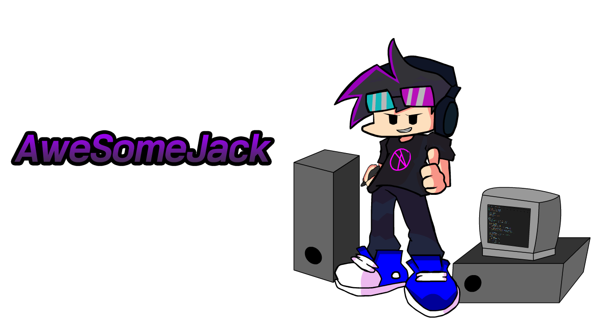
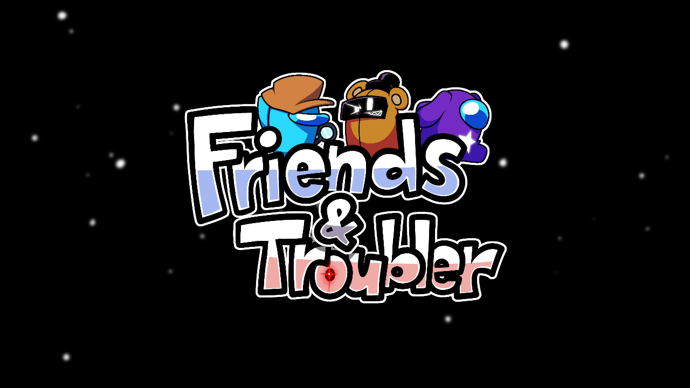
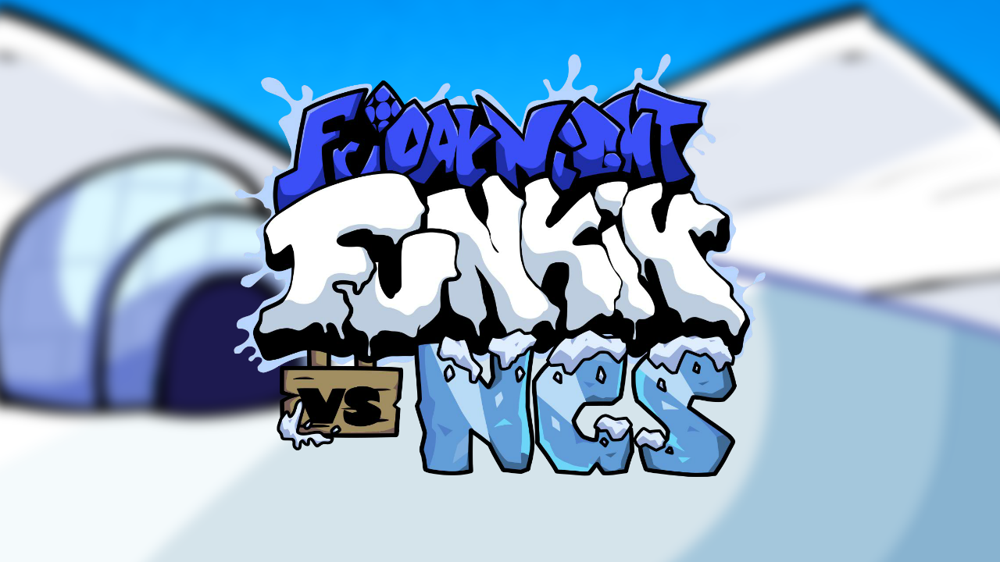

어썸Jack 작업 공간

소개
모두 안녕하세요 어썸잭입니다!
전 한국인 프리랜서이자 다양한 콘텐츠를 선보여줍니다.
2017년도 유튜브를 시작하게 되었으며 2021년 프나펑 콘텐츠로 전향 되었고
현재 프리랜서 활동을 시작하고 있습니다.
제작한 프로젝트
(이미지 클릭하면 해당 사이트로 이동됩니다!)
어썸잭의 첫 코딩 작품이자 한글패치 작품 클립모드 입니다!

프나펑 어몽어스 모드이자 이보다 상상치도 못한 사건들이 펼쳐진다!

프나펑, 종합게임 주 콘텐츠이자 스트리머 남극석님의 5주년 기념 팬 모드입니다!
(이 게임은 고어, 공포 포함 되어있어 청소년들은 각별한 주의가 필요합니다.)
저택의 비밀을 파헤쳐서 탈출하라! 알만툴 단편 공포게임 감정기복
(현재 미완성입니다!)